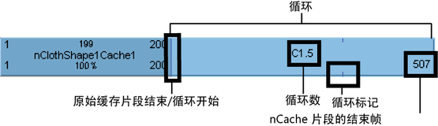
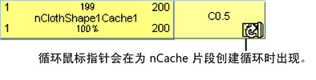
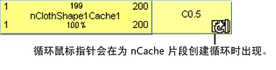
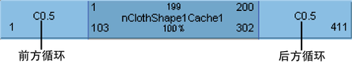
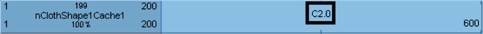
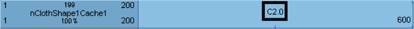

您可以使 nCache 片段循环来重复包含在缓存片段中的模拟。您可以在缓存片段之前或之后创建循环，这些循环可以是整个循环，也可以是部分循环。

原始 nCache 片段的末尾和第一个循环的开头由一条小垂直线标记。nCache 片段的每个循环序列的末尾由一个小的循环标志或标记来标记。
循环由字母 C 表示，循环部分所呈现的蓝色比缓存片段的其余部分要淡些。
使 nCache 片段循环
- 在场景视图中，选择要使其缓存片段循环的对象。
- 在“Trax 编辑器”(Trax Editor)中，选择“列表 > 加载选定角色”(List > Load Selected Characters)。
当前对象的所有缓存都将在轨迹视图中显示为片段。
- 选择要循环的 nCache 片段。
- 执行下列操作之一：
 键并拖动 nCache 缓存片段下部角点的热点，以便在缓存片段之前（前方循环）或之后（后方循环）创建循环。 
键并拖动 nCache 缓存片段下部角点的热点，以便在缓存片段之前（前方循环）或之后（后方循环）创建循环。 - 在“通道盒”(Channel Box)中，设定“前方循环”通道值以在 nCache 片段之前创建一个循环，或设定“后方循环”通道值以在 nCache 片段之后创建一个循环。
请参见前方循环/后方循环。

编辑 nCache 片段的循环数
- 在“Trax 编辑器”(Trax Editor)中，双
 nCache 片段的循环部分中“C”旁边的数字，为片段在主缓存片段之前循环（前方循环）或之后循环（后方循环）的次数键入一个新数字，然后按
nCache 片段的循环部分中“C”旁边的数字，为片段在主缓存片段之前循环（前方循环）或之后循环（后方循环）的次数键入一个新数字，然后按  键。 
键。 例如，如果 nCache 片段的循环部分显示在主循环片段之后且其循环次数为 2，则在缓存片段的主要部分之后重复两次主缓存片段中的模拟。